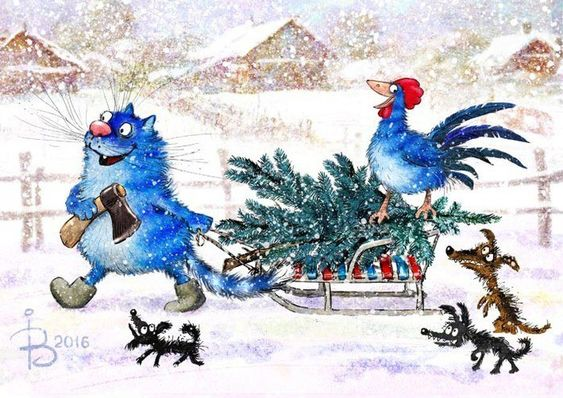
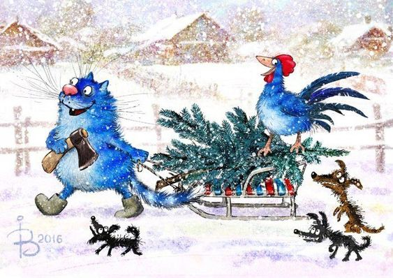
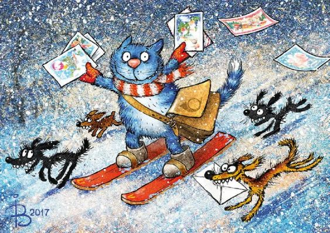
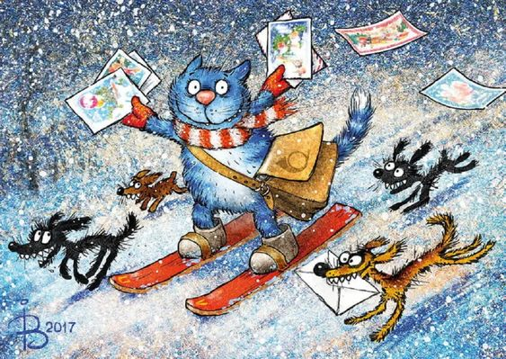

Интересный факты про Новый год
1. Традиция отмечать Новый год 1 января появилась на Руси три столетия.
2. Фильм «Ирония судьбы, или с лёгким паром» показывается перед Новым Годом на российском телевидении вот уже около 40 лет подряд.
3. Традиция украшать новогоднюю елку гирляндой берет начало в 1895 году, когда таким способом была украшена ель, установленная в США перед белым домом.
4. Новогодняя традиция прятать подарки под ёлку появилась в России ещё несколько веков назад.


 

 
